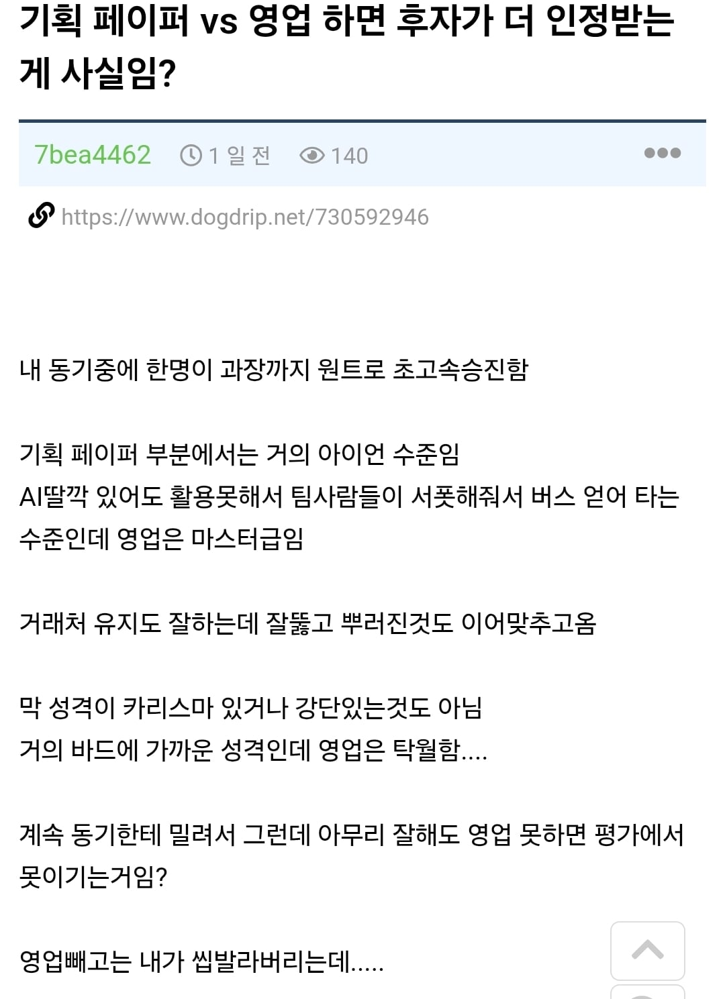
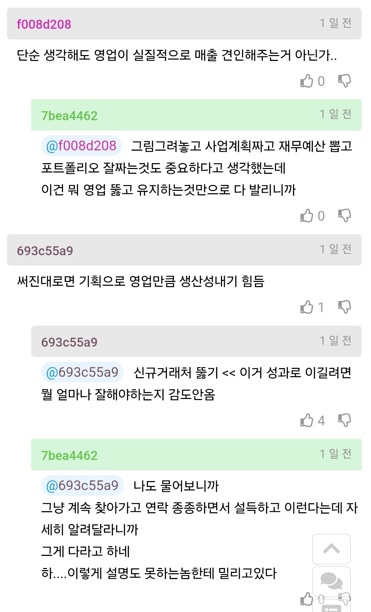
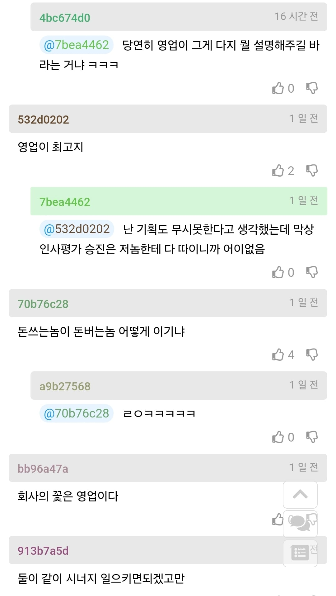
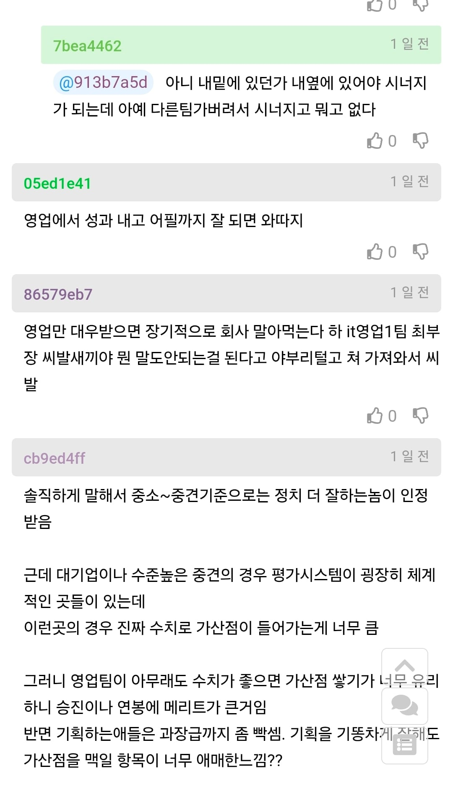
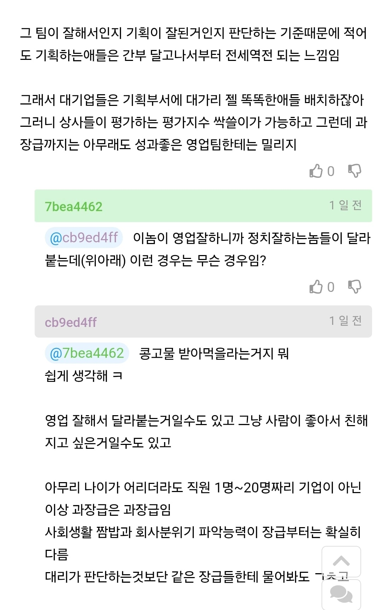
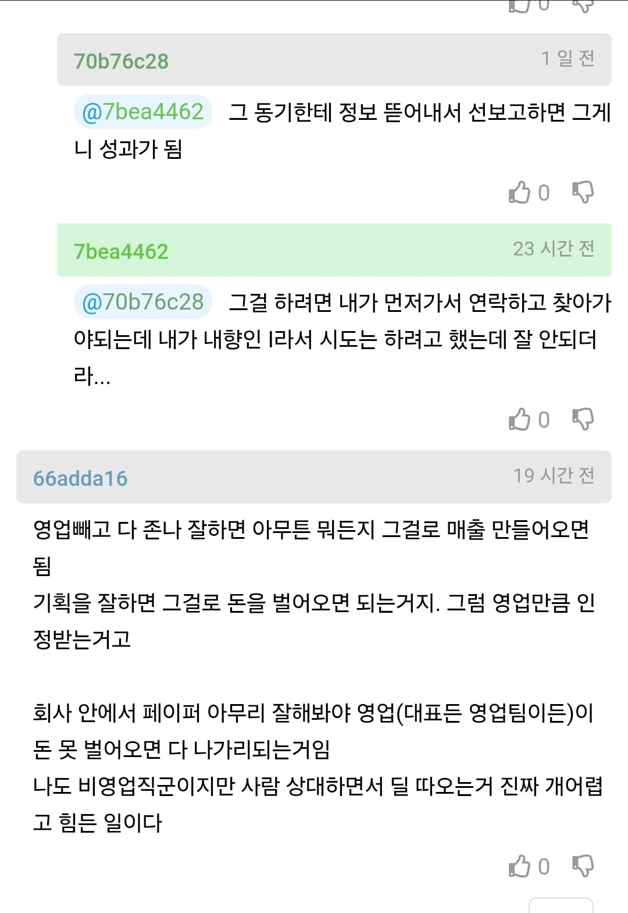

사람 시기하는거 나쁜버릇임
결국 일을따야 기획도하는거니까........
프리랜서라 기획 + 영업 + 디자인 + 퍼블 (개발만 개발자가) 하는데...
영업이 젤 중요하긴함 결국 시발점이니까
기획목숨 10개보다 능력좋은 영업 한명이 더 소중함
지도 지입으로 써놨네 앞으로 영업이나 사무데크는 ai딸깍이 될건데 영업은 그게 안되니까
점점 더 영업이 쎄지면 쎄졌지 기획이 파워 가질일은 영영 없다
나도 사무데크인데 영업이 거래처 가져오고 어그러진 거래처 달려가서 풀어주고 해결해주고 하면 그는 신이야
회사의 다음 10년을 보장할만한 기획서가 아니고서야..
간단하게 영업을 제대로 못해서 일거리를 못만들면 자기가 잘한다고 주장하는 영역은 아무런 의미도 가지지 못한다고 생각하면 되는데 그래도 차이를 모르면..
일감을 수주해오는게 회사 생존의 알파요 오메가긴 해